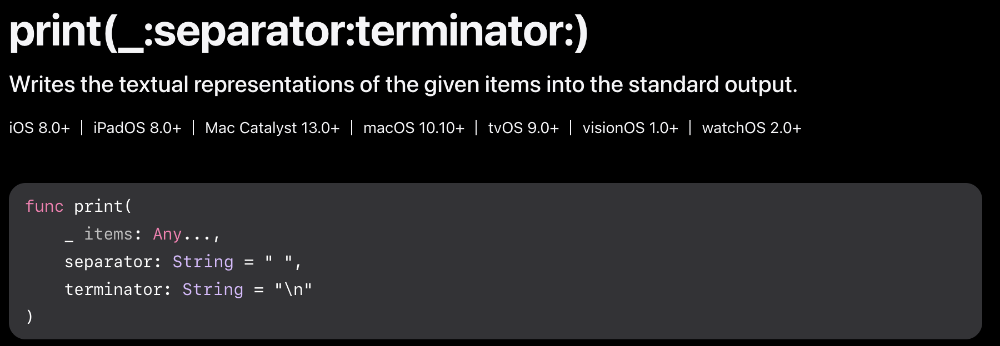

* 이전 포스팅 [Swift] 함수 VOL1 Argument Label, Wild Card Patern에서 내용이 이어집니다.
https://novlog.tistory.com/entry/Swift-Method-Usage-Argument-Label-Variadic-Parameters
[Swift] 함수 VOL1 Argument Label, WildCard Patern
* 개인적인 공부 내용을 기록하는 용도로 작성된 글이기에 잘못된 내용을 포함하고 있을 수 있습니다. ✨수정사항✨1. 백틱 기호를 활용한 파라미터 내부에서 예약어 사용 관련 내용 추가 -2025.02
novlog.tistory.com
#Function notation
Function notation [함수 표기법] 이란 말 그대로 함수를 표기하는 방법론으로
Camel Case, Snake Case 같은 하나의 Naming Convention이다.
Apple 공식 문서에서 제공하는 함수들 또한 함수 표기법을 지켜 명시되어 있으며
반드시 공식 문서에서 함수를 읽기 위함이 아니더라도 실제 Swift 프로그래밍에서도 다방면에서 사용되기에 반드시 정리하고 넘어가야 하는 개념이다.
Function notation [함수 표기법]의 핵심은 다음과 같다.
1. Prameter Name은 명시하지 않으며 Argument Label만 사용한다.
2. Parameter의 개수만을 표현한다.
즉, 리턴타입 파라미터명과 같은 정보는 적지 않으며
Argument Label, Parameter 개수 두 가지 정보만을 표현한다.
Swift에서 가장 기본적인 함수인 print 함수를 애플 공식 문서에서 발췌해 보았다.
print(_:separator:terminator:) 함수 표기법을 차근차근 분석해 보면
print(_:separator:terminator:) - WildCard를 사용해 Argument Label이 생략된 첫 번째 파라미터
print(_:separator:terminator:) - Argument Label이 separator인 두 번째 파라미터
print(_:separator:terminator:) - Argument Label이 terminator인 세 번째 파라미터
요약하자면 print 함수는 최대 3개의 파라미터를 전달받을 수 있으며, 그중 첫 번째 파라미터는 WildCard(_)를 사용해 생략할 수 있다는 의미이다.
https://developer.apple.com/documentation/swift/print(_:separator:terminator:)

✨유의점✨ 파라미터가 존재하지 않는 경우 Function notation은 괄호 없이 함수 이름만 명시한다.
#Function notation 활용 예제
Swift에서 함수는 일급 객체이다.
그렇기에 Swift 내부에서 함수는 변수에 대입하거나 다른 함수의 파라미터로 대입할 수 있다.
함수 표기법에 실제로 어떻게 사용되는지 간단한 Swift 예제 코드를 통해 알아보자.
ver.1 hello 메서드를 오버로딩한 ver.2 hello 함수를 정의했다.
참고로 두 함수가 파라미터 이름, 파라미터 타입, 반환값이 모두 동일한데 어떻게 오버로딩이 가능한지 의문이 생길 수 있으나
Swift에서 WildCard Pattern(_)을 사용해 파라미터를 재정의하면
컴파일 시점에서 서로 다른 함수로 인식하게 되기에 가능한 것이다.
func hello(_ name: String) {
print("#1 hello ver.1")
print("Hello, \(name)!")
}
func hello(name: String) {
print("#2 hello ver.2")
print("Hello, \(name)!")
}
그렇다면 이름이 같은 두 함수를 어떻게 구분해서 호출해야 할까?
단순히 hello로 호출하는 것은 당연히 불가능할 것이다.
컴파일러가 ver.1 hello를 출력할지 오버로딩된 ver.2 hello를 출력할지 구분이 불가능하기 때문이다.
var helloTest = hello // error
이때 Foundation Notation [함수 표기법] 문법을 사용하면 된다.
함수표기법을 사용해 두 가지 hello 함수를 명시해 보면 다음과 같다.
hello(_:)
hello(name:)
var helloTestVer1 = hello(_:) // ver1
var helloTestVer2 = hello(name:) //ver2
helloTestVer1("nov")
helloTestVer2("nov")#1 hello ver.1
Hello, nov!
#2 hello ver.2
Hello, nov!